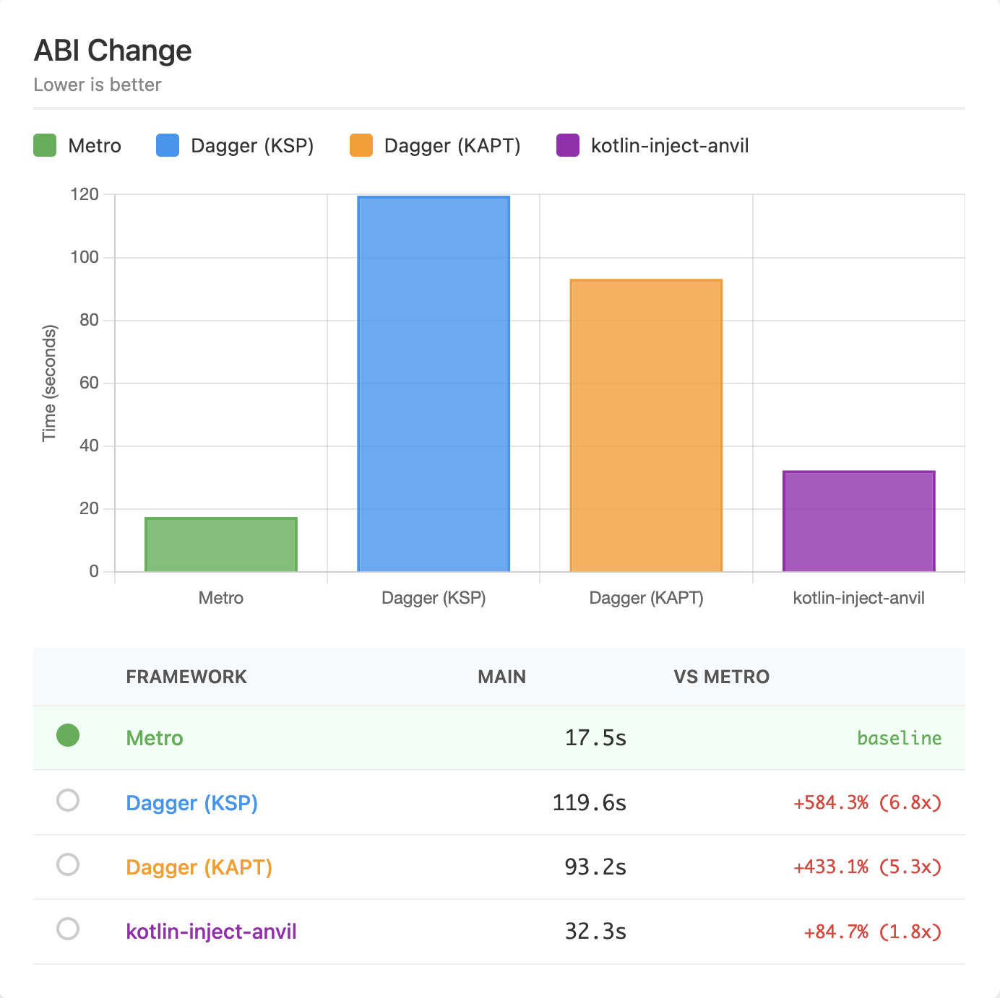
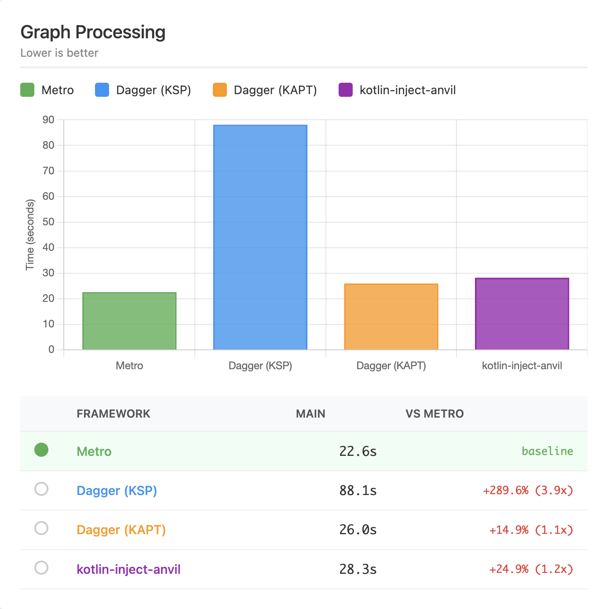
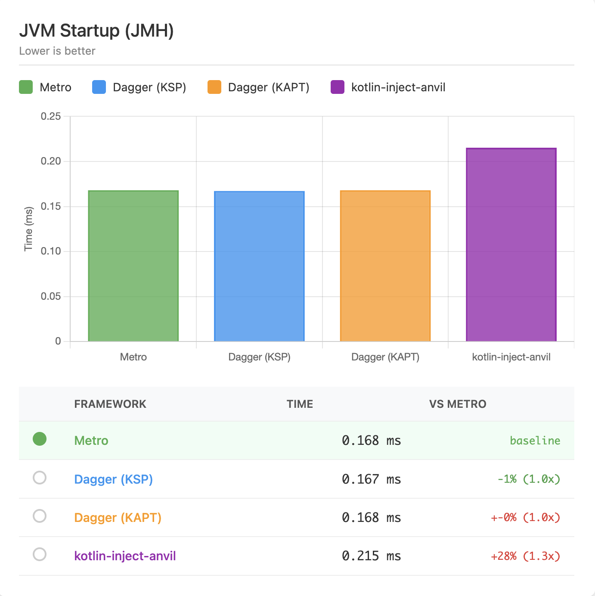
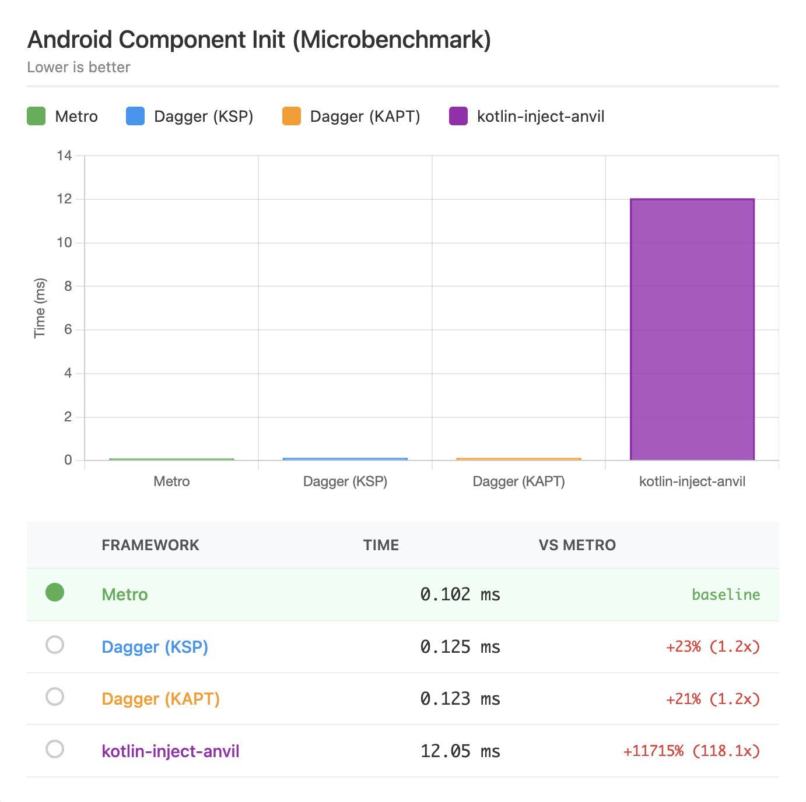

Performance¶
Metro strives to be a performant solution with minimal overhead at build-time and generating fast, efficient code at runtime.
Benchmarks¶
To benchmark against anvil-ksp + dagger-ksp, anvil-ksp + dagger-kapt, and kotlin-inject-anvil + kotlin-inject, there is a benchmark directory with a generator script. There are more details in its README, but in short it generates a nontrivial multi-module project (default is 500 modules but is configurable) and benchmarks with gradle-profiler.
The below sections describe the two scenarios Metro’s benchmarks run against using this project generation.
Modes
Metro: Purely running metroDagger (KSP): Running dagger-ksp with anvil-ksp for contribution merging.Dagger (KAPT): Running dagger-kapt with anvil-ksp for contribution merging.Kotlin-Inject: Running kotlin-inject with kotlin-inject-anvil for contribution merging.
Build Performance¶
Metro’s compiler plugin is designed to be fast. Running as a compiler plugin allows it to:
- Avoid generating new sources that need to be compiled
- Avoid running KSP/KAPT
- Generate IR that lowers directly into target platforms
- Hook directly into kotlinc’s IC APIs.
In a straightforward migration, it improves ABI-changing build performance by 80–85%.
Methodology¶
This benchmark uses gradle-profiler to benchmark build performance using different tools.
Summary
Results as of Metro 0.8.3, Anvil-KSP 0.5.1, Dagger 2.57.2, and Kotlin-Inject 0.8.0 with kotlin-inject-anvil 0.1.6 are as follows.
(Median times in seconds)
| Metro | Dagger (KSP) | Dagger (KAPT) | Kotlin-Inject | |
|---|---|---|---|---|
| ABI | 17.5s | 119.6s (+584%) | 93.2s (+433%) | 32.3s (+85%) |
| Non-ABI | 11.6s | 13.8s (+20%) | 23.2s (+100%) | 11.3s (-2%) |
| Graph processing | 22.6s | 88.1s (+290%) | 26.0s (+15%) | 28.3s (+25%) |
View the full interactive benchmark report for detailed results including environment information.
ABI Change¶
This benchmark makes ABI-breaking source changes in a lower level module. This is where Metro shines the most.

Non-ABI Change¶
This benchmark makes non-ABI-breaking source changes in a lower level module. The differences are less significant here as KSP is quite good at compilation avoidance now too. The outlier here is KAPT, which still has to run stub gen + apt and cannot fully avoid it.

Raw Graph/Component Processing¶
This benchmark reruns the top-level merging graph/component where all the downstream contributions are merged. This also builds the full dependency graph and any contributed graph extensions/subcomponents.
Metro again shines here. Dagger (KSP) seems to have a bottleneck that disproportionately affects it here too.

Runtime Performance¶
Metro’s compiler generates Dagger-style factory classes for every injection site. The same factory classes are reused across modules and downstream builds, so there’s no duplicated glue code or runtime discovery cost.
Because the full dependency graph is wired at compile-time, each binding is accessed through a direct provider field reference or direct invocation in the generated code. No reflection, no hashmap lookups, no runtime service locator hops, etc.
Methodology¶
To measure and compare runtime performance, Metro benchmarks graph initialization time across different DI frameworks. These benchmarks measure the time to create and initialize a dependency graph with 500 modules’ worth of bindings.
Interactive Report
View the full interactive benchmark report for detailed results including environment information.
JVM Startup¶
These benchmarks run with JMH.
On the JVM, Metro, Dagger (KSP), and Dagger (KAPT) all perform nearly identically since they generate similar factory-based code. kotlin-inject is slightly slower due to its different code generation approach.

JVM Startup (R8 Minified)¶
These benchmarks run with JMH on an R8-minified jar of the same built project.
With R8 minification enabled, Metro shows a slight edge. The benefits of compile-time wiring become more apparent as R8 can further optimize the generated code.

Android Graph Init¶
On Android, the differences become more pronounced. Metro and Dagger perform similarly well, while kotlin-inject shows a significant performance gap.

Real-World Results¶
Below are some results from real-world projects, shared with the developers’ permission.
Cash App
Cash App wrote a blog post about their migration to Metro: Cash App Moves to Metro
According to our benchmarks, by migrating to Metro and K2 we managed to improve clean build speeds by over 16% and incremental build speeds by almost 60%!
Gabriel Ittner from Freeletics
I’ve got Metro working on our code base now using the Kotlin 2.2.0 preview
Background numbers
- 551 modules total
- 105 modules using Anvil KSP ➡️ migrated to pure Metro
- 154 modules using Anvil KSP + other KSP processor ➡️ Metro + other KSP processor
- 1 module using Dagger KAPT ➡️ migrated to pure Metro
Build performance
- Clean builds without build cache are 12 percentage points faster
- Any app module change ~50% faster (this is the one place that had kapt and it’s mostly empty other than generating graphs/components)
- ABI changes in other modules ~ 40% - 55% faster
- non ABI changes in other modules unchanged or minimally faster
Madis Pink from emulator.wtf
I got our monorepo migrated over from anvil, it sliced off one third of our Gradle tasks and ./gradlew classes from clean is ~4x faster
Kevin Chiu from BandLab
We migrated our main project at BandLab to metro, finally!
Some context about our project:
- We use Dagger + Anvil KSP
- 929 modules, 89 of them are running Dagger compiler (KAPT) to process components
- 7 KSP processors
| Build | Dagger + Anvil KSP | Metro (Δ) |
|---|---|---|
| UiKit ABI change (Incremental) | 59.7 s | 26.9 s (55% faster) |
| Root ABI change (Incremental) | 95.7 s | 48.1 s (49.8% faster) |
| Root non-ABI change (Incremental) | 70.9 s | 38.9 s (45.2% faster) |
| Clean build | 327 s | 288 s (11.7% faster) |
Cyril Mottier from Amo
We already had incremental compilation in the single-digit seconds range, but I’m still blown away by how much faster it is now that the entire codebase is fully on Metro. 🤯
Vinted
Vinted adopted metro and reaped significant build time and developer experience improvements: From Dagger to Metro
Metro consolidated all the best practices from other popular frameworks, while leaving out the not-so-best practices on the side, allowed us to enable K2 and immediately experience significant build time improvements, while also unlocking incremental compilation, which means that the builds will be getting even faster
Tracing¶
If you want to investigate the performance of Metro’s compiler pipeline, you can enable tracing in the Gradle DSL.
metro {
traceDestination.set(layout.buildDirectory.dir("metro/trace"))
}
This will output a Perfetto trace file after the compilation that you can then load into https://ui.perfetto.dev.
Note that these traces probably do require a bit of familiarity with the Metro compiler internals and only trace the IR transformation layer.
Warning
Note that file option inputs like traceDestination are not tracked as inputs to the kotlin compilation, so you should run your target kotlin compilation task with --rerun (not --rerun-tasks!) to ensure it it’s not cached.